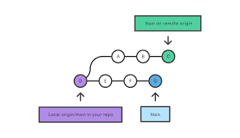

This is the first file in my new Git Repo.
A new line in our file!
A new paragraph for the first GitHub!

cls
$dll = "LibreHardwareMonitorLib.dll"
Unblock-File -LiteralPath $dll
Add-Type -LiteralPath $dll
$monitor = [LibreHardwareMonitor.Hardware.Computer]::new()
$monitor.IsCPUEnabled = $true
$monitor.IsStorageEnabled = $true
$monitor.Open()
foreach ($sensor in $monitor.Hardware.Sensors) {
write-host $sensor.Name
write-host $sensor.SensorType
write-host $sensor.Value
}
$monitor.Close()